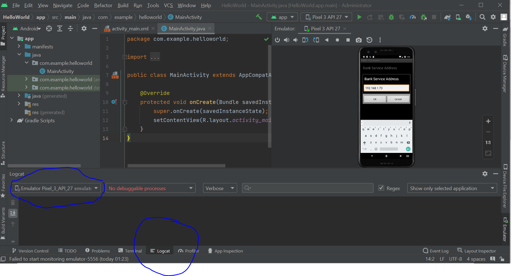

Activity 5 - Mobile Forensics
Android Studio
Estimated Time : 15 Minutes
Objective
In this Activity 5, the installed app from previous activity is modified to connect with Python web server running on local computer and login credentials are monitored on Logcat window.
Description
In this Activity, we will modify settings inside app to connect with python web server setup on local system and monitor the logs using "Logcat" on Android Studio.
Instructions
- Step 1: Leave the python web server running on port 8080. Do not disturb the server.
- Step 2: Open new command prompt window and check your system ip address with command "ipconfig". Make a note of IPv4 address in the ipconfig command output.
- Step 3: Now go to android studio -> AVD (Android Virtual Device) -> Run Device in emulator -> Open app (which is installed through login.apk file)
- Step 4: Inside the app, at the lower right corner, click the three-dot icon.
- Step 5: Click Reset, Click the three-dot icon again.
- Step 6: Click "Preferences" -> Click "Bank Service Address" -> Put your system ip address identified from Step2 here.
- Step 7: Similarly go to "Preferences" page again -> Click "HTTP Port" -> Set port as 8080
- Step 8: Now go to app login page (start page) and enter credentials. Default account credentials are provided on the same login page.
- Step 9: When you enter credentials and click "Login" button, you can see logs in "Logcat" window.
- Step 10: Take a screenshot of logs in "Logcat" window showing the credentials in plaintext format. Please send the screenshot to Professor through mail for submission.


Self-Assessment
Please complete the following self-assessment over Activity 4.
Start Assessment